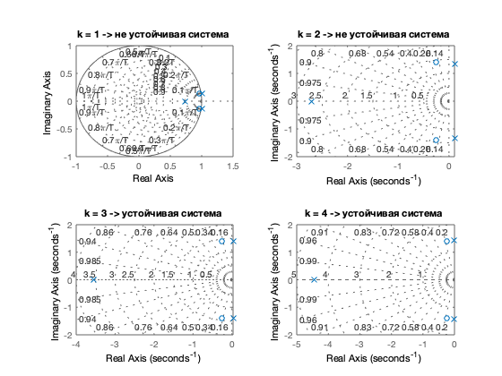
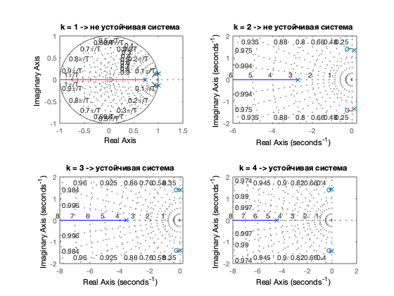
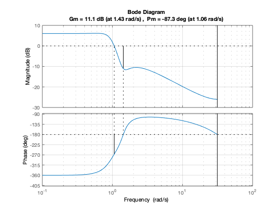
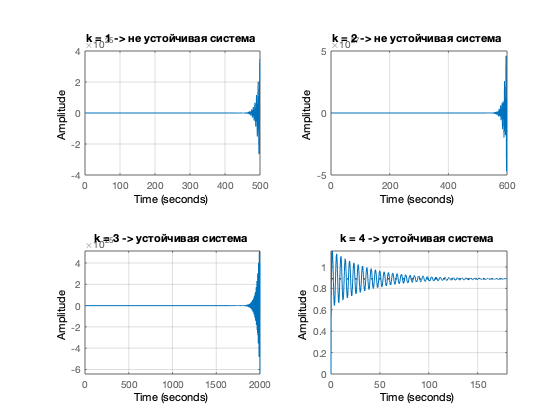
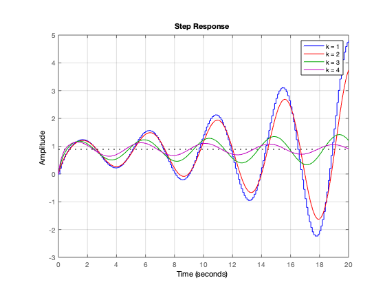
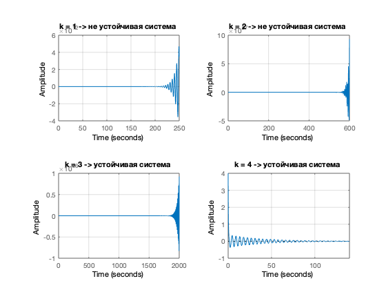

Для непрерывной и дискретной системы с произвольной передаточной характеристикой провести анализ устойчивости.
Contents
Задаем входные параметры
Надо установить пакет control system toolbox G = (s^2+2s+3)/(s^3+2s^2+2s^1+1)-передаточная функция разомкнутой системы c2d конвертирует модель из непрерывного в дискретное время с временем 0.1 feedback - возвращает объект модели sys для взаимосвязи отрицательной обратной связи объектов модели (G,1), 1- сам на себя без изменений обратного сигнала
close all;
clear;
G = tf([2 4 1],[2 4 7 8]);
Gd = c2d (G ,0.1);
Gcld = feedback(G,1);
Строим полюсы системы
Если все они слева от оси ординат, система устойчива. В нашем случае устойчива, все находятся слева
pole(Gcld)
figure;
pzmap(Gcld); grid on;
ans = -0.8108 + 1.6147i -0.8108 - 1.6147i -1.3783 + 0.0000i
Строим корневой годограф
Показывает расположение полюсов в зависимости от коэффициента усиления.
figure;
rlocus(G); grid on;
 Строим диаграмму Боде (АЧХ и ФЧХ)
Видим запас устойчивости системы. Функция margin-выводит АЧХ И ФЧХ по Боде и сразу выдает нам запас устойчивости системы.без лишних манипуляций. На АЧХ ищем пересечения с осью Х, по точке пересечия на части графика полученную точку проецируем на на график ФЧХ и находим запас прочности по фазе На ФЧХ проводим прямую на -180, ищем точку пересечения с графиком проецируем эту точку на АЧХ и получаем запас по амплитуде Если Pm>0 и Gm>0 , то система устройчива. В нашем случае она устойчива.
figure;
margin(Gd); grid on;
 Строим диаграмму критерий Найквиста
Для устойчивости годограф не должен охватывать точку (-1;0), что он и не делает значит система устойчива
figure;
nyquist(Gcld); grid on;
Строим реакцию системы на ступеньку
figure;
step(Gcld); grid on;
 Для разных коэффициентов усиления
figure; k1 = 2; Gcld1 = feedback(G*k1,1); k2 = 5; Gcld2 = feedback(G*k2,1); k3 = 7; Gcld3 = feedback(G*k3,1); step(Gcld,'b',Gcld1,'r',Gcld2,'g',Gcld3,'m',20), grid on, legend('k = 1','k = 2','k = 5','k = 7')
Импульсная характеристика системы
figure;
impulse(Gcld); grid on;
 Критерий Гурвица
для того, чтобы динамическая система была устойчива, необходимо и достаточно, чтобы все n главных диагональных миноров определителя Гурвица были положительны, при условии A0 > 0. Эти миноры называются определителями Гурвица
Используем функцию raus_gur взятую с википедии
Из коэффициентов характеристического уравнения строится определитель Гурвица по алгоритму:
1) по главной диагонали слева направо выставляются все коэффициенты характеристического уравнения от а1 до an;
2) от каждого элемента диагонали вверх и вниз достраиваются столбцы определителя так, чтобы индексы убывали сверху вниз;
3) на место коэффициентов с индексами меньше нуля или больше n ставятся нули.
т.к. А=1 и и последующие миноры >0, то система устойчива
[A, B, C] = raus_gur([2 4 7 8])
A =
1
B =
12
C =
4 8 0
2 7 0
0 4 8